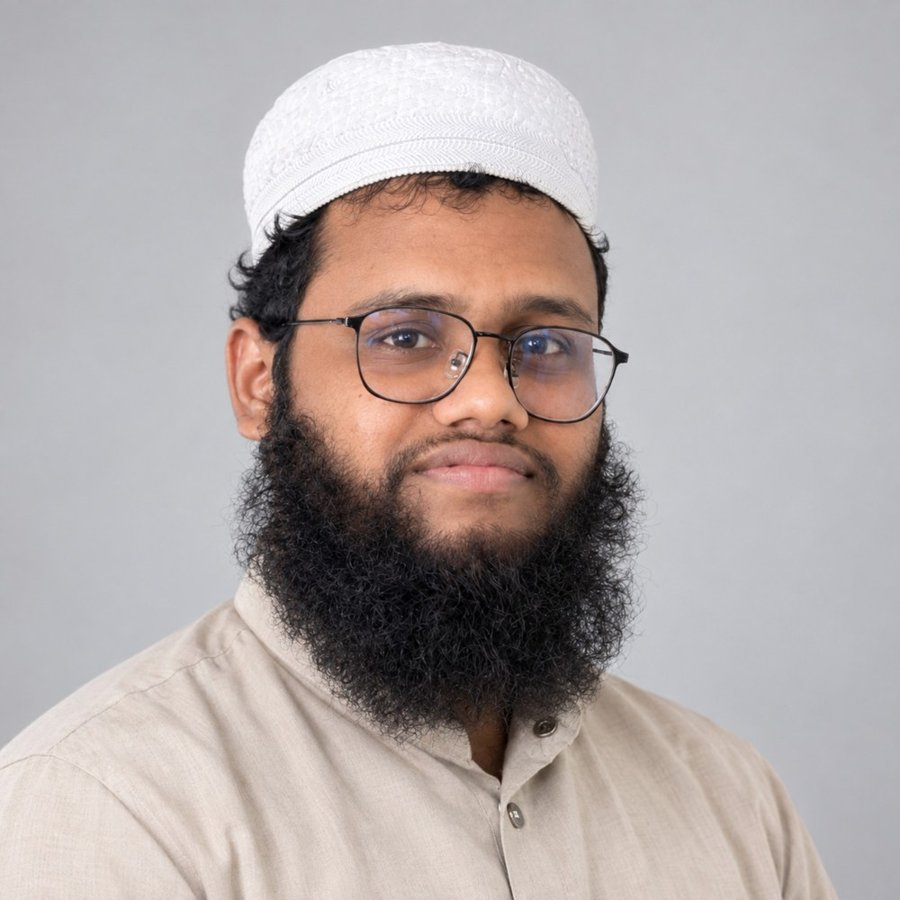

তাখাসসুস ফিল ইফতা
জামিয়া আরাবিয়া রবিউল উলুম, ঢাকা
আমি আল্লাহর পথে আহ্বানকারী দাঈ, ইসলামী শিক্ষক, লেখক, ইমাম ও খতিব। বাংলাদেশের ঢাকায় থাকি। আমার মূল কাজ ইসলামের মাধ্যমে মানুষকে আল্লাহর দিকে আহ্বান করা: কুরআন ও হাদিস শিক্ষা, শিক্ষার্থীদের দিকনির্দেশনা এবং হিকমত ও স্পষ্টতার সাথে ইসলামের বার্তা ছড়িয়ে দেওয়া।

আমার শিক্ষা ও অভিজ্ঞতার সংক্ষিপ্ত পরিচয়।
আমার মূল কাজ দাওয়াহ ইলাল্লাহ, অর্থাৎ মানুষকে আল্লাহর দিকে আহ্বান করা। আমার আলোচ্য বিষয় ইসলাম: তা শেখানো, ব্যাখ্যা করা এবং সর্বত্র মানুষের কাছে এর বার্তা পৌঁছে দেওয়া। আমি দাওরায়ে হাদিস, তাখাসসুস ফিল ইফতা, কুরআনিক স্টাডিজ ও ইসলামিক দাওয়াহর শিক্ষায় শিক্ষিত। আমার কাজের মধ্যে আছে ইসলামী শিক্ষা, কুরআন ও তাজবীদ শিক্ষা, শিক্ষার্থী পরামর্শ, বক্তব্য প্রদান, খুতবা ও ইমামতি।
আমি বর্তমানে বাংলাদেশের আস-সুন্নাহ ফাউন্ডেশনের সাথে যুক্ত এবং খণ্ডকালীনভাবে ইংলিশ ল্যাঙ্গুয়েজ প্রোগ্রামে কাজ করছি। প্রায় দেড় বছরে শত শত শিক্ষার্থীকে কুরআন ও ইসলামী শিক্ষা দিয়েছি এবং তাদের সঠিক পথে আনার চেষ্টা করেছি। সাধারণ শিক্ষিত ও দ্বীনি শিক্ষিত উভয় ধরনের শিক্ষার্থীর সাথে কাজের অভিজ্ঞতা আছে। আমি ইসলামের শিক্ষা স্পষ্ট ও সমকালীন প্রশ্নের সাথে প্রাসঙ্গিকভাবে তুলে ধরতে আগ্রহী।
এই ওয়েবসাইটে আমার পেশাগত পরিচয়, যোগ্যতা, শিক্ষামূলক কার্যক্রম, মিডিয়া, লেখা ও যোগাযোগের লিংক একসাথে রাখা হয়েছে।
যোগ্যতা ও প্রশিক্ষণ, নিচে নির্বাচিত সনদসহ।
জামিয়া আরাবিয়া রবিউল উলুম, ঢাকা
আস-সুন্নাহ ফাউন্ডেশন
জামিয়া রহমানিয়া আরাবিয়া, মোহাম্মদপুর, ঢাকা
আব্দুল্লাহ বিন ওমর (রা.) মাদরাসা
নূরানী প্রশিক্ষণ, পাবলিক স্পিকিং, ইংরেজি ভাষা, বেসিক কম্পিউটার, বাংলা ভাষা ও সাহিত্য।
কুরআন ও তাজবীদ শিক্ষা, ইসলামিক স্টাডিজ ও হাদিস, দাওয়াহ, খুতবা, ইমামতি, কাউন্সেলিং, সমন্বয়, লেখালেখি ও ডিজিটাল শিক্ষা।


ইসলামী শিক্ষক ও দাওয়াহ-সংক্রান্ত দায়িত্ব
ইংলিশ ল্যাঙ্গুয়েজ প্রোগ্রামে খণ্ডকালীন কাজ; কুরআন, তাজবীদ, হাদিস, ইসলামিক স্টাডিজ ও সালাত বিষয়ক শিক্ষা; শিক্ষার্থীদের দিকনির্দেশনা; দাওয়াহ, কাউন্সেলিং, খুতবা, ইমামতি ও শিক্ষা সমন্বয়।
আরবি শিক্ষক
আরবি পড়িয়েছি এবং শিক্ষার্থীদের ইসলামী শিক্ষায় এগিয়ে যেতে সহায়তা করেছি।
ইসলামী শিক্ষা প্রতিষ্ঠানে শিক্ষকতা এবং ইসলামী শিক্ষা ও দাওয়াহ কার্যক্রমে অংশগ্রহণ।
ক্লাস, বক্তব্য ও শিক্ষামূলক কার্যক্রম।

মাদকাসক্তি চিকিৎসায় আলেম সমাজের করণীয় ও সম্ভাবনা বিষয়ক মতবিনিময় সভায় অংশগ্রহণ (১১ ফেব্রুয়ারি ২০২৫), ইনসাইট সাইকো-সোশ্যাল কেয়ার অ্যান্ড রিসার্চ, রমনা, ঢাকা।

পোস্ট গ্র্যাজুয়েট ডিপ্লোমা ইন ইসলামিক দাওয়াহ প্রোগ্রামের একটি প্যানেল আলোচনা (উপরে ভিডিও)।

আস-সুন্নাহ স্কিল ডেভেলপমেন্ট ইনস্টিটিউটের অনুষ্ঠানে চেয়ারম্যানের সাথে।

শিক্ষার্থীদের কুরআন তিলাওয়াত শেখানো।

আরবি বর্ণমালা ও উচ্চারণ শেখানো।

আস-সুন্নাহ ফাউন্ডেশনের অনুষ্ঠানে বক্তব্য।

ইসলামিক দাওয়াহ ডিপ্লোমার ১ম ব্যাচের সমাপনী অনুষ্ঠানে সম্মাননা স্মারক গ্রহণ।

ইসলামিক দাওয়াহ ডিপ্লোমার ১ম ব্যাচের সাথীদের সাথে।

দাওয়াহ ডিপ্লোমা প্রোগ্রামের একটি উপস্থাপনা সেশন।

দলগত শিক্ষা সেশনে শিক্ষার্থীদের দিকনির্দেশনা।

প্রাতিষ্ঠানিক সমন্বয় ও প্রশাসনিক কাজ।
প্রকাশিত লেখা ও বই।

শতাব্দী পত্রিকায় প্রকাশিত সহজ বিয়ে নিয়ে ধর্মীয় ও দার্শনিক দৃষ্টিকোণের একটি লেখা।

খালিদ সাইফুল্লাহ রাকিব রচিত একটি বই।
শিক্ষামূলক, বক্তব্য ও পেশাগত যোগাযোগের জন্য নিচের তথ্য ব্যবহার করুন।
বিভিন্ন প্ল্যাটফর্মে যুক্ত হোন
আমার অফিসিয়াল পাবলিক প্রোফাইল।